This tutorial demonstrates classic boat hull lofting techniques using typical plan and profile curves. The classic hull shape is based on a design from an old Boat Builder’s Handbook magazine. Many designs similar to this are available over the Internet.
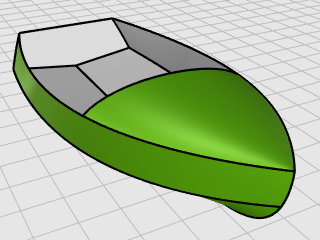
You will learn how to:
The fore-and-aft curvature from the bow to the stern of a ship’s deck as shown in side elevation.
The intersection of the bottom and the sides of a flat or v-bottomed boat.
The planking forming the stern of a square-ended boat.
The meaning of fair is much debated in the marine industry and not easily defined. Although fairing or smoothing is traditionally associated with hull surfaces, all visible surfaces on any object can benefit from this process. In Rhino, the first cue for fairness in a surface is the spacing of the surface isocurves.
There are other characteristics of fair that curves and surfaces tend to have, although a curve or surface may be fair without exhibiting all of the characteristics. If you keep these characteristics in mind while modeling, you will end up with a better final product.
The guidelines for creating a fair surface include:
The hull curves were created by tracing the original plans using a background bitmap. The first step is to check the curves for fairness before creating surfaces from them.
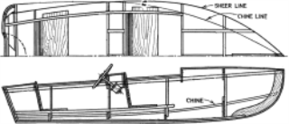
The designer’s curves are illustrated. The sheer and chine are extended at the forward and aft ends to accommodate the lofting process.
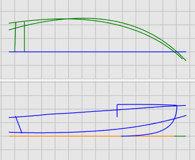
On the Rhino Help menu, click Learn Rhino, and then click Tutorials and Samples.
In the Tutorials panel, under User's Guide, double-click the tutorial model file Victory.3dm.
The curves are laid out on the Plan and Profile layers.
Select each of the designer’s curve pairs in plan and profile and use the CurvatureGraph command to determine if the curves are fair. In this case, the file has the original curves that were traced from the background bitmap. They are not fair. In other words, the curves do not smoothly transition from one end of the sheer to the other. Adjust points on any curve that is not fair. Start with the sheer (the curve at the top of the hull shape). It has the biggest impact on the appearance of the vessel.
Select the sheer curve.
On the Analyze menu, click Curve > Curvature Graph On to start the CurvatureGraph command.
In the Curvature Graph dialog, increase Display scale to exaggerate the curvature variation.
We can tell that this curve has a poor curvature quality from its curvature graph.
Change the Curvature hair color as needed to make the curvature graph stand out from the background.
The illustration shows the curvature graph applied to the 2-D sheer in profile.
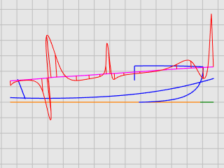
The curvature graph should be continuous and exhibit the desired characteristics for the curve.
When the curve is bending downward, the curvature graph will be above the curve. (1)
Conversely, when the curve is bending upward, the curvature graph will be below the curve. (2)
The point of inflection (where the bending is reversing from one side to the other) is where the curvature graph crosses the curve. (3)
Before doing any point editing to make a curve fair, you will rebuild the curve to remove excess control points. In general, rebuilding a curve involves using the Rebuild command along with examination with the CurvatureGraph command.
Select the sheer curve.
On the Edit menu, click Rebuild to start the Rebuild command.
In the Rebuild dialog box, change Point count to 6 and Degree to 5.
Enable Delete input, and click OK.
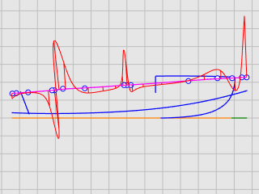
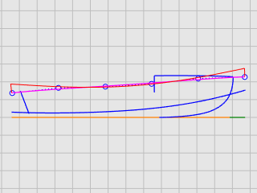
The curvature is improved, but it is not good enough. From the curvature graph, we can tell that the black curve in the right illustration is the real shape of the current sheer curve if we overstate it. It bends three times. We will improve the curve further by editing its control points to make it bend only once.
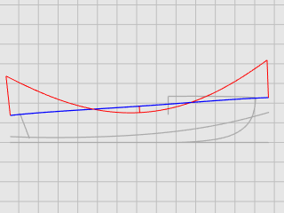
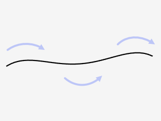
The fine-tuning curvature of a curve requires moving control points a very short distance. It is not easy to do this with the normal mouse movement, so we can use Nudge Keys, the MoveUVN, or DragStrength commands to reduce moving strength. We will use the DragStrength command in this tutorial.
Select the sheer curve and press F10 to turn on its control points.
Start the DragStrength command.
In the Drag Strength dialog, set the strength value to 5.
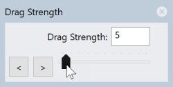
Moving the mouse cursor in a distance on the screen will only move an object 5% of the distance.
In the Front viewport, select the four control points in the middle.
Use Gumball to move the control points in the y‑axis.
Make the whole curvature graph below the sheer curve. It can be above the sheer curve if it is the design.
Close the Drag Strength dialog.
Drag strength returns to 100% when the dialog is closed.
Press F11 or ESC to turn off the curve control points.
For more information about using Rhino's gumball feature, review the Help topic for the Gumball command.
Two video tutorials also help with learning to use the gumball
Hello Gumball! (https://vimeo.com/84954262)
Gumball Advanced (https://vimeo.com/260472052)
So far, you have been working with 2-D curves. To loft the surfaces, you will use these planar curves to create 3‑D curves. The planar curves can then be discarded.
With the 3D Curves layer current, you will select the profile and plan view representations of each curve. You will use the Crv2View command to create the 3‑D curve that combines the x‑, y‑, and z‑coordinates of the 2-D curves. The 2-D curves must be planar for this command to work.
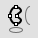
Create the 3‑D curvesSet the 3D Curves layer current.
Select the plan and profile representations of the sheer curve.
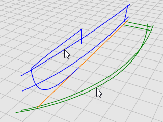
On the Curve menu, click Curve from 2 Views to start the Crv2View command.
A 3‑D curve is created. It is the intersection of the two surfaces extruded from the two input curves.
Repeat the Crv2View command for the chine curve.
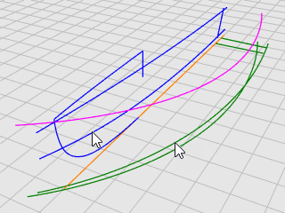
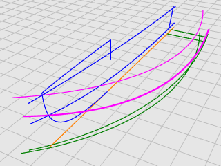
When you are satisfied that the proper curves were created, delete or hide the four input curves of the Crv2View command.
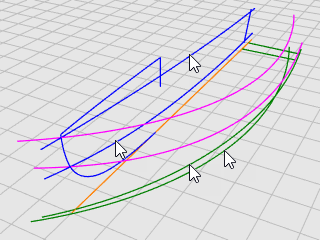
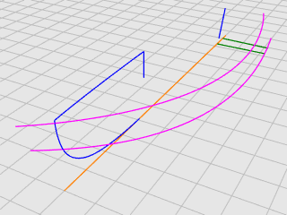
For the lofting process to work on the bottom panel, it cannot come to a point. The lofted shape must be rectangular. This is why the curves are extended beyond the centerline. The curves can be lofted into a rectangular surface that can then be trimmed back. Except for the bottom curve, the sheer and chine curves are already extended.
Select the centerline and the bow curve.
On the Edit menu, click Trim to start the Trim command.
Click the centerline near the forward end, and press Enter.
The centerline is trimmed to the end of the bow curve.
On the Curve menu, click Extend Curve > Extend Curve.
At the Select boundary objects... Press Enter for dynamic extend prompt, press Enter.
At the Select curve to extend... prompt, set the command option Type=Smooth, and click the centerline near the forward end in the Top viewport.
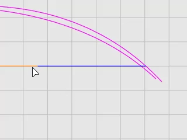
At the End of extension... prompt, click the command option ToPoint.
Move the cursor close to the ends of the shear and chine curves, but do not snap to them, click and press Enter.
The bottom curve for lofting is created.
|
|
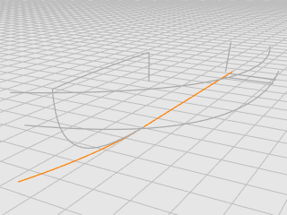 |
Press F11 or ESC to turn off the curve control points.
We have created three edge curves for one side of the hull. A lofted surface will be created from these curves.
Make the Hull layer current.
On the Surface menu, click Loft.
At the Select curves to loft... prompt, select the sheer, chine, and bottom curves in order and near the same ends, and press Enter.
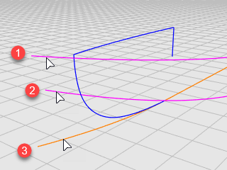
In the Loft Options dialog box, in the Style drop-down menu, click Straight sections.
Under Cross-section curve options, select Rebuild with, set the control point count to 10, and click OK.
We have created one side of the hull. We will mirror the hull to the other side. Use both sides to trim each other. To make the both sides fully intersect, we will extend the bottom surface before mirroring.
On the Surface menu, click Extend Surface.
At the Select an edge to extend... prompt, set Type=Smooth.
Click the bottom edge, move the edge a short distance outward and click.
In the Top viewport, select the hull.
On the Transform menu, click Mirror.
At the Start of mirror plane... prompt, click XAxis.
The hull is mirrored to the opposite side across the CPlane x‑axis.
Select the hull surfaces on both sides.
On the Edit menu, click Trim.
In the Front viewport, crossing-select the hulls as illustrated, and press Enter.
Drag the selection rectangle from right to left. Do not cross the blue bow curve.
The transom will be a surface created from a closed planar boundary.
Select the transom centerline.
On the Edit menu, click Trim.
At the Select object to trim... prompt, set ExtendCuttingLines=Yes.
The line will work as an infinite line to trim the hull surfaces.
In the Front viewport, crossing select the hull behind the transom centerline.
The hull surfaces are trimmed to the line.
The transom edges do not form a closed boundary. We will add a line to fill the gap for creating the transom surface.
On the Curve menu, click Line > Single Line.
Pick the two corners with the End object snap to create a line.
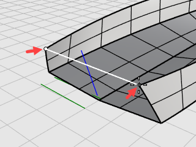
On the Surface menu, click Planar Curves to start the PlanarSrf command.
At the Select planar curves... prompt, select the line and the transom edges, and press Enter.
Select the hull and the transom surfaces.
On the Edit menu, click Join.
The surfaces are joined into a polysurface.
Select the hull.
On the Analyze menu, click Edge Tools > Show Edges.
The command should report "Found 11 edges total; 3 naked edges, no non-manifold edges."
If your hull has more edges or naked edges, the hull was not built correctly. You should start over and follow the steps carefully.
In the Edge Analysis dialog, select Naked Edges.
The naked edges display as magenta. You should not see any naked edges other than the upper edges of the hull.
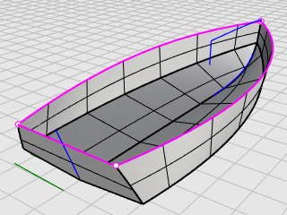
The last step is to create the deck surface. Two curves describe the silhouette of the deck. They will be used as references to create the cross-section curve of the deck. In the end, the deck surface will be created from a curve network.
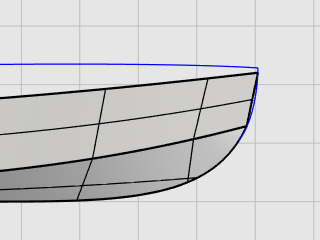
When building a 3‑D model from a 2-D concept plan, it is usually the case that the 3‑D model cannot exactly match the 2-D plan. How to compromise between a 2-D concept and a 3‑D model is one of the modeling skills you will develop. In this case, the deck profile curve does not end at the hull corner. We will move the curve end to the hull corner.
Select the deck profile curve, press F10 to turn on its control points.
Drag the first control point, using the End object snap to move the point to the corner of the hull, and click.
Press F11 or ESC to turn off the curve control points.
On the Curve menu, click Curve from objects > Project.
At the Select curves and points to project... prompt, in the Front viewport, select the vertical line, and press Enter.
At the Select surfaces... prompt, select the hull, and press Enter.
The line is projected onto both sides of the hull.
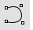
Draw one half of the cross-section curveOn the status bar, click the Planar pane to turn on Planar mode.
On the Curve menu, click Free-Form > Control Points.
In the Right viewport, use the End object snap to place the first point at the end of the deck profile curve (1).
Hold down Shift to turn Ortho mode on, move the cursor to the right, and click to place the second point (2).
Release Shift and click to place the third point (3).
Snap to the upper end of the projected curve on the hull (4), click, and press Enter to finish the curve.
On the Transform menu, click Mirror.
At the Select objects to mirror prompt, in the Right viewport, select the half cross-section curve, and press Enter.
At the Start of mirror plane... prompt, click the YAxis option or type Y, and press Enter.
The curve is mirrored to the other side across the viewport y‑axis.
Select the two half cross-section curves.
On the Edit menu, click Join.
The two half cross-section curves are joined into a polycurve.
The deck cross-section curve (1), the deck profile curve (2), and the upper edges of the hull (3) and (4) form a curve network that will be used to create the deck surface.
On the Surface menu, click Curve Network to start the NetworkSrf command.
In the Surface From Curve Network dialog box, under Edge matching, select Position for A, B, and C, and click OK.
The deck surface is created.
Rhino for Windows © 2010-2018 Robert McNeel & Associates. 24-Nov-2021